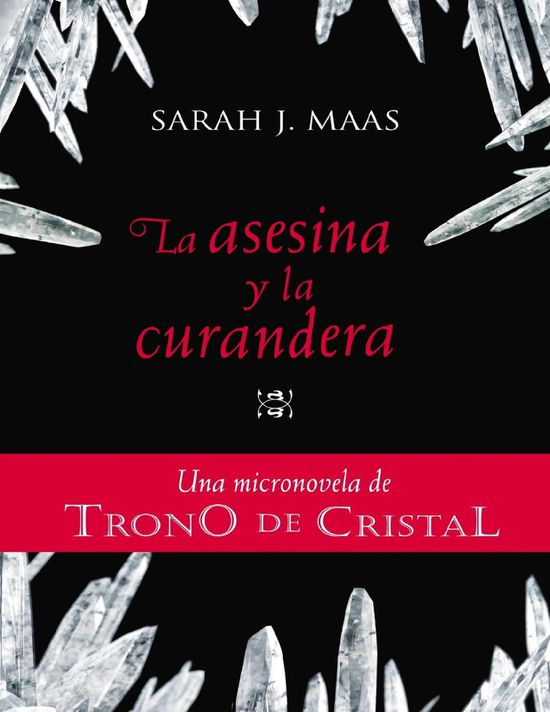

Saga Trono de Cristal - Sarah J. Maas
Developed by:
Ordén de Lectura

Saga Trono de Cristal - Sarah J. Maas
Developed by:
Ordén de Lectura
Autora: Sarah J. Maas
Editorial: Bloomsbury USA Childrensen
En español: Sello Alfaguara juvenil
Premios y reconocimientos
2015,2018: Best Young Adult Fantasy & Science Fiction
#0.5
2014

La hoja de la asesina
Se han publicado un total de cinco micronovelas o historias cortas, las cuales constituyen precuelas de la serie principal, publicadas en el libro The Assassin's Blade
LA HOJA DE LA ASESINA
#0.1
La asesina y el señor de los piratas
Celaena Sardothien pagara la deuda con el señor de los piratas
#0.2
La asesina y la curandera
Celaena Sardothien pagara el haber desafiado a su amo
#0.3
La asesina en el desierto
La asesina tendrá suerte si sale con vida del desierto
#0.4

La asesina en el submundo
Celaena Sardothien en una misión que
ayudará a acabar con la esclavitud en el
reino
#0.5
La asesina en el imperio
Celaena aprende que tenerlo todo significa poder perderlo todo
Artista: @ElthericArts
#1
2012
Trono de cristal
Un corazón de hielo. Una voluntad de acero. Te presentamos a una asesina. Te presentamos a Celaena Sardothien. Bella. Letal. Destinada a la grandeza
Artista: @diabolical_victorian_cat
#2
2013

Corona de medianoche
Ella es la mayor asesina que su mundo haya conocido jamás. Ella es la única esperanza del reino. Pero, ¿a dónde la conducen su conciencia y su corazón?
Artista: @natalieSuward
2 The Best YA Books of 2013
#3
2014

Heredera de fuego
Ella es la heredera de ceniza y fuego, y no se doblegará ante nadie. La asesina del rey enfrenta el desafío de un destino aún más importante y arde con un resplandor más impresionante que nunca antes en Heredera de fuego, continuación del bestseller Corona de sangre
Artista: @the_court_of_dreams
#4
2015
Reina de las sombras
Continúa el viaje épico de Celaena, cuya intensidad va en aumento hasta alcanzar una apasionada y terrible crisis que podría destrozar su mundo
Artista: @hachandorauis
4-10 best fantasy novels 8-The Best YA Books of 2015
#5
2016
Imperio de tormentas
El viaje del hada Aelin de asesina a reina ha cautivado a millones en todo el mundo, y esta quinta entrega de la aclamada serie bestseller de The New York Times, Trono de cristal, dejará sin aliento a sus lectores.¿Logrará Aelin evitar que su mundo se resquebraje o esto marcará el fin de todo?
Artista: @nessiarts
20-The Best YA Books of 2016
#6
2017
Torre del alba
Poder, alianzas, guerra, venganza... La travesía a un imperio distante de sanadores mágicos
Artista: @indrakiin @thedustyshop
#7
2018

Reino de cenizas
Aelin lo arriesgó todo para salvar a su gente a un tremendo costo. Encerrada en un ataúd de metal por la Reina de las Hadas, Aelin debe sostenerse en su feroz voluntad para soportar meses de tortura
Artista: @YA_ARIART